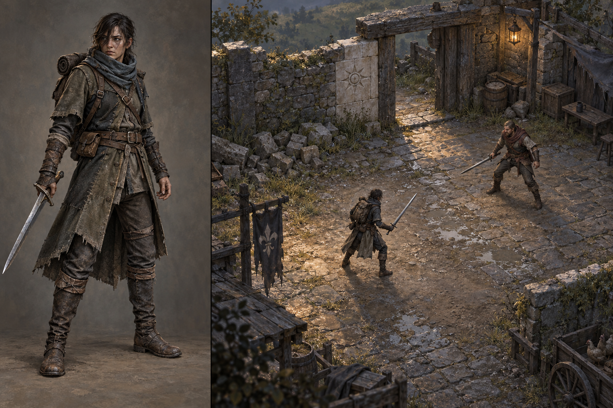
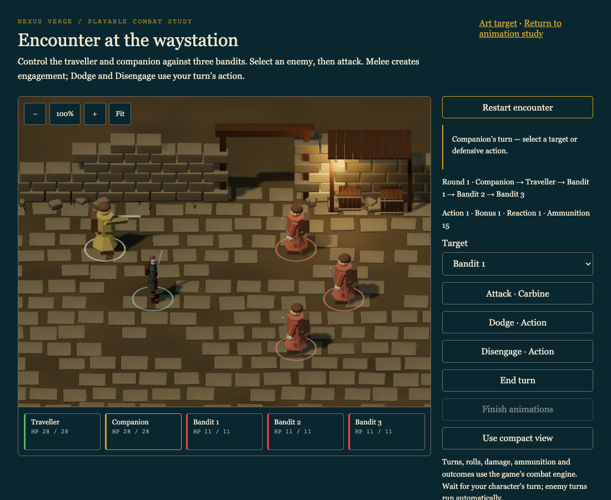

The traveller and the waystation
Concept art for the next visual slice: adult proportions, worn cloth and leather, weathered masonry and restrained warm light. This image is a visual target, not the playable renderer.

What to judge
The proportions and degree of realism; the balance of character identity and player projection; whether the materials and courtyard feel like the world you want to inhabit.
The close-up tests character design. The courtyard tests atmosphere and small-figure readability. Its staging is illustrative; sword contact still belongs to the moving demo.
What the playable proof must show
The encounter now contains an early Blender traveller with separate weapons and a first waystation section. Use the animation study to swap the traveller’s weapon and compare actions.
This first articulated model proves the asset pipeline. Sculpting, clothing, hair, textures and animation still need refinement toward the concept shown above.
This concept does not establish animation quality or browser performance. Those need to be measured using the real asset in the scene.
Current playable composition pass
The closer combat view with the gateway, shelter and lantern recomposed behind the formation. Review character readability and the presence of the setting together. The supporting cast still uses the earlier geometry; the concept above remains the art-quality target.

Reference notes and generation prompt. Character selection remains open for this 3D study; this is not a decision to replace the existing map avatars or portraits.